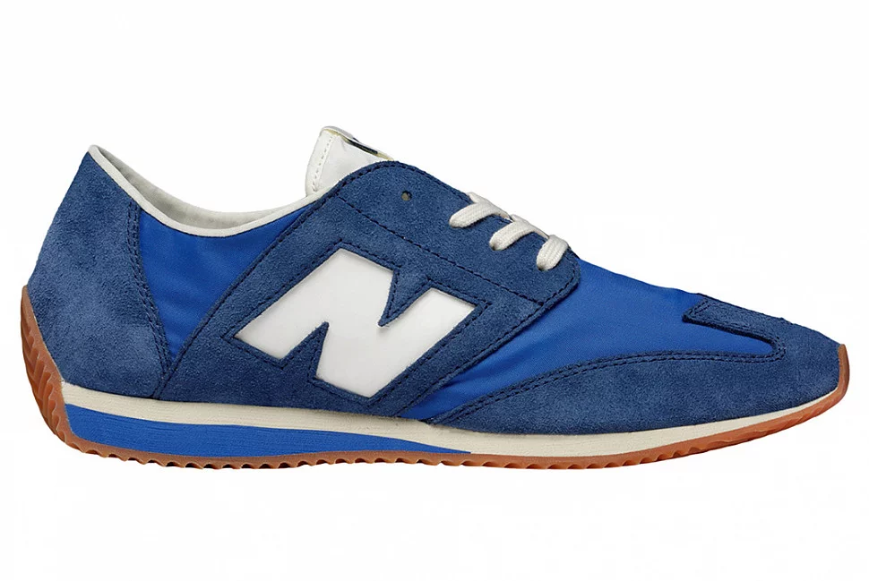
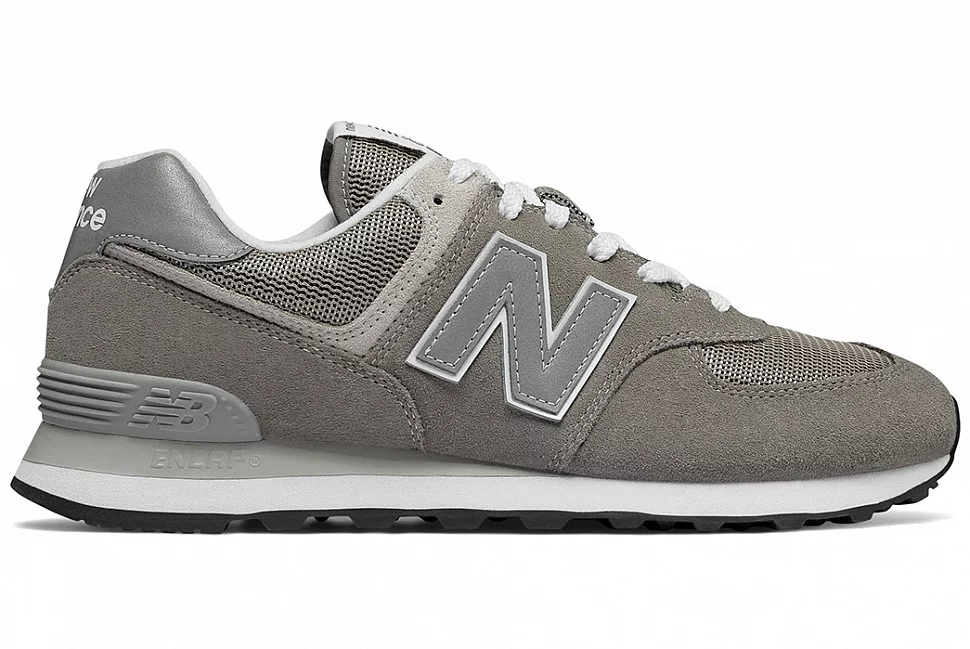
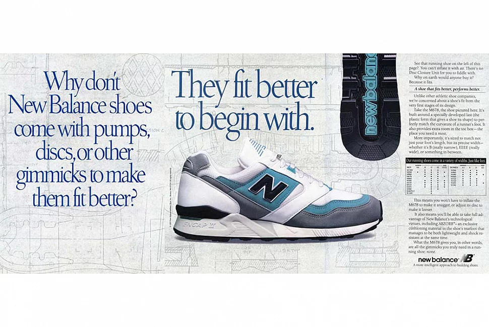
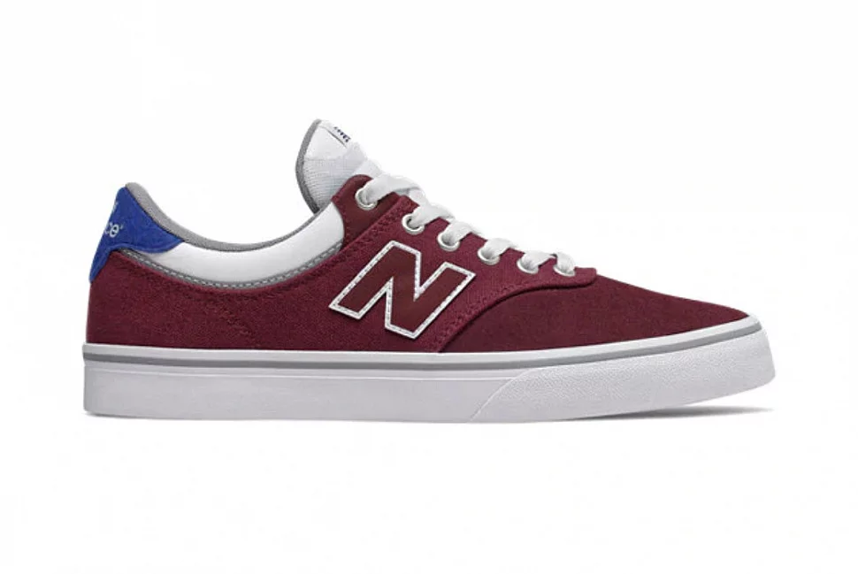
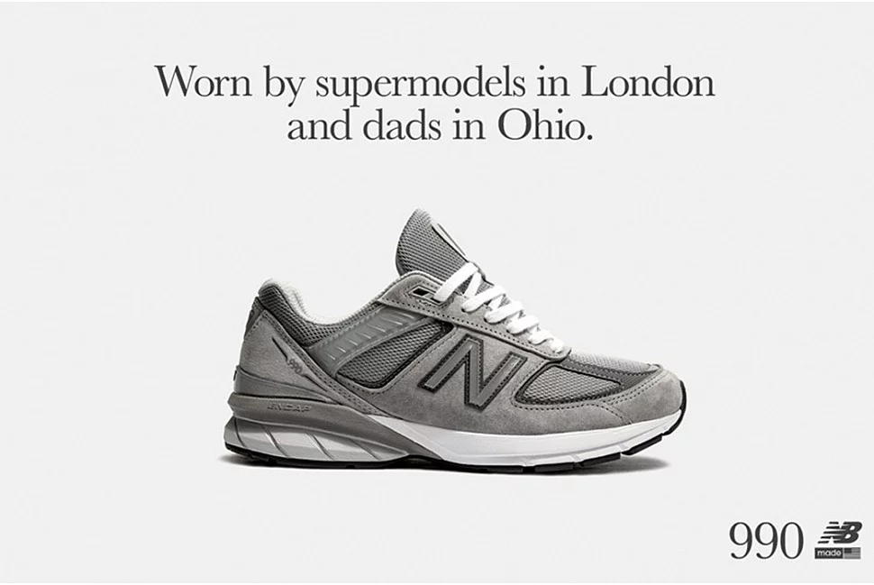

ІСТОРІЯ NEW BALANCE
Не секрет, що бренди Adidas та Nike вже кілька років очолюють ринок сучасних кросівок, але New Balance все ще добре тримається на плаву, показуючи нові моделі кросівок, які відомі своєю якістю та комфортом. Будучи одним із найбільших спортивних виробників у світі, New Balance існує вже понад 100 років. Цей бренд створює культові кросівки та одяг для найамбітніших та найпопулярніших спортсменів світу.
Назва New Balance – широко відома у всьому світі, популярність цього бренду зростає з кожним роком. Але як New Balance здобув такий колосальний успіх? І чому на деяких взуттєвих коробках Balance зображено курку? У цій статті ми відповідатимемо на ці та інші питання, заглиблюючись в історію New Balance.
Історія та філософія New Balance

New Balance був заснований Вільямом Дж. Райлі в 1906 як компанія "New Balance Arch Support Company". Ірландський іммігрант Райлі проживав у Бостоні, штат Массачусетс. Вважається, що Райлі був натхненний створення свого першого продукту після спостереження за курками навколо свого двору. Його увага привернула те, як курка ставить лапу і пересувається. Птах настільки впевнено стояв, що Райлі помітив — опора на три крапки дає курці можливість тримати абсолютний баланс. Трохи пізніше Райлі розробив свій перший супінатор для взуття з трьома опорними точками.
У 1927 Райлі найняв продавця на ім'я Артур Холл, який в 1934 став партнером в компанії New Balance Arch Support. На цьому етапі Холл зосередив свій бізнес на продажу супінаторів людям, змушеним проводити багато часу. Через деякий час, Холл продав компанію New Balance Arch Support своєї дочки Елеоноре та її чоловіка Полу Кідду у 1956 році.

До 1960 року супінатори New Balance стали дуже популярними серед спортсменів-початківців, деякі навіть зверталися до бренду з проханням зробити кросівки на замовлення. Це надихнуло Елеонору та Пола Кідда на розробку першої моделі кросівок New Balance “Trackster”. Випущені в 1961 році і спочатку виготовлені в домашніх умовах компанією Kidds, кросівки Trackster стали першою парою у світі кросівок, у яких була "хвиляста" підошва. Це був також перший кросівок з неоднорідною шириною моделі, що робило їх доступними всім спортсменам. Незабаром “Trackster” почали використовувати школи та коледжі у штаті Массачусетс для своїх бігових команд.
Модель Trackster була успішною, але New Balance ще не встиг завоювати основний ринок кросівок. Компанія залишалася невеликим підприємством, яким керувало шість осіб, які виробляли, упаковували та відправляли кросівки New Balance клієнтам поштою. Продаж був незначний, але в день Бостонського марафону 1972 року голова правління Джим Девіс купив компанію і зробив її одним з найбільших брендів з виробництва кросівок у світі.

Джим придбав New Balance у ідеальний час. Бостон став центром "бігової лихоманки", яка обрушилася на США в 1970-х роках, і New Balance був у розпалі. Лінійка продуктів швидко розширилася, а продажі пішли вгору, коли взуття з'явилося у Вашингтоні наприкінці 1970-х та на початку 1980-х років. Саме в цей час кросівки New Balance стають основним продуктом у взуттєвих магазинах, які продають екіпірування для бігунів. Джим також взяв на себе зобов'язання не відступати від ідеї компанії намагатися індивідуалізувати моделі взуття, при цьому зберігаючи високу якість продукту. Трохи пізніше New Balance почав використовувати унікальні номери моделей, а не імена для своїх кросівок. Число визначало тип взуття, активність, на яку вона була розроблена, і чи були кросівки створені для стабільності чи швидкості.

В 1976 New Balance випустив модель 320, перші кросівки New Balance, на яких тепер зображений знаменитий логотип «N». Вони були виготовлені з нейлону та замші; продажі 320 злетіли, коли журнал Runner's World визнав ці кросівки найкращим біговим взуттям. Успіх моделі 320 ознаменував світовий прорив New Balance.

До 80-х років у New Balance був всесвітньо успішний асортимент продукції, який тепер включав взуття для ходьби і одяг, таку як непромокаючу куртку Gore-Tex. У 1988 році New Balance випустив, мабуть, свою найвідомішу модель кросівок 574. Спочатку модель була розроблена як бігове взуття, що забезпечує високий рівень комфорту та стійкості, 574 став популярною моделлю поза біговою доріжкою. У пісні “Buggin' out”, яку виконує гурт A Tribe Called Quest, є такий рядок, який читає покійний Малік Тейлор: “Ви хочете образити мене, але ви, як і раніше, не знаєте мене. Я ношу кросівки New Balance, щоб не вступити на вузьку стежку”.

Продаж New Balance продовжував йти вгору завдяки численним успішним релізам кросівок. 2001 року компанія New Balance випустила популярну нині модель 991, яку покійний Стів Джобс на публічних заходах протягом кількох років постійно носив.
New Balance сьогодні
Сьогодні New Balance – це багатонаціональна корпорація зі штаб-квартирою в Бостоні, штат Массачусетс. Компанію, як і раніше, очолює Джим Девіс. New Balance в даний час виробляє безліч кросівок та одягу, включаючи спеціалізовані товари для спорту, такі як футбол, крикет, баскетбол та їзда на велосипеді. New Balance також запустив бренд взуття для скейтбордингу під назвою "New Balance Numeric", який розповсюджується Black Box Distribution, компанією, заснованою професійним скейтбордистом Джеймі Томасом. "Цифрова лінія" дозволила New Balance вийти на ринок сучасного способу життя та знайти відгук у молодих клієнтів.

New Balance співпрацює з багатьма відомими модними брендами, включаючи Norse Projects, Stussy, United Arrows, Junya Watanabe eYe та Beams Plus. Кросівки New Balance широко представлені на ринках чоловічого та жіночого одягу, а також на ринку високої моди. New Balance також часто використовує у своїй рекламі термін «батьківські кросівки» для більш функціональних моделей. Реклама гласила: «Носиться супермоделями в Лондоні та татами в Огайо».

Однак, незважаючи на свою величезну популярність, в історії New Balance також були деякі скандали та протиріччя. Через кілька днів після президентських виборів у США в 2016 році New Balance опинився в центрі уваги після заяви, зробленої віце-президентом компанії зі зв'язків з громадськістю Метью Лебреттоном, в якій він заявив: «Адміністрація Обами була глуха до нас, і нам здається, що з обранням Трампа все рухається у правильному напрямку». Цю заяву про Трампа зустріли хвилею зворотної реакції, коли клієнти викидали та знищували свої кросівки NB. У період, коли політична напруженість рясніла, позиція New Balance була сприйнята як суперечлива позиція в порівнянні з думкою більшості інших модних брендів, які відкрито, підтримували Гілларі Клінтон під час виборів.
New Balance швидко пояснив, що ця заява була зроблена в контексті теми Транстихоокеанського партнерства, політики епохи Обами, проти якої відверто виступив протиборчий гігант, пославшись на те, що це зашкодить їхньому виробництву в США. Продовжуючи свою аргументацію «New Balance», заявив, що вони відкрито підтримували торговельну політику лівих кандидатів Хілларі Клінтон і Берні Сандерса, які також виступили проти ТПП. Нещодавно вони приєдналися до жменьки інших модних брендів, які виступили проти торгових тарифів Трампа, що відрізняється від заяви після виборів 2016 року.
Кросівки New Balance відомі своїми високоякісними матеріалами та надійністю виробництва. Окрім аутсорсингу виробництва в такі країни, як Китай та В'єтнам, New Balance виробляє лінійки кросівок, виготовлених в Англії та Америці. Супінатор для взуття – ключовий пункт продажу взуття New Balance. На деяких взуттєвих коробках New Balance зображено курку всередині, як данину поваги засновнику бренду Вільяму Дж. Райлі, який створив свої перші супінатори на основі курячих лапок.